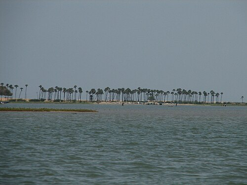

THIRUVALLUR
Pulicat Lake

Pulicat Lake is India’s second-largest brackish water lake. It is a major habitat for migratory birds, especially flamingos, during winter.The lake is also known for the Pulicat Bird Sanctuary and supports local fishing communities with its rich biodiversity.